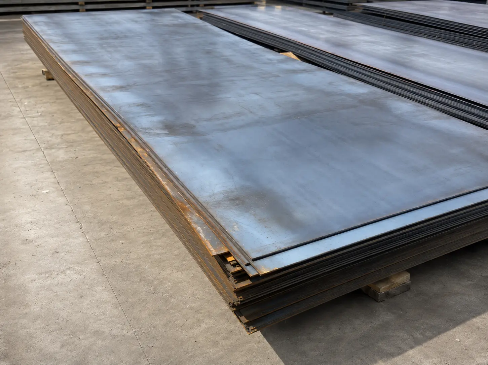
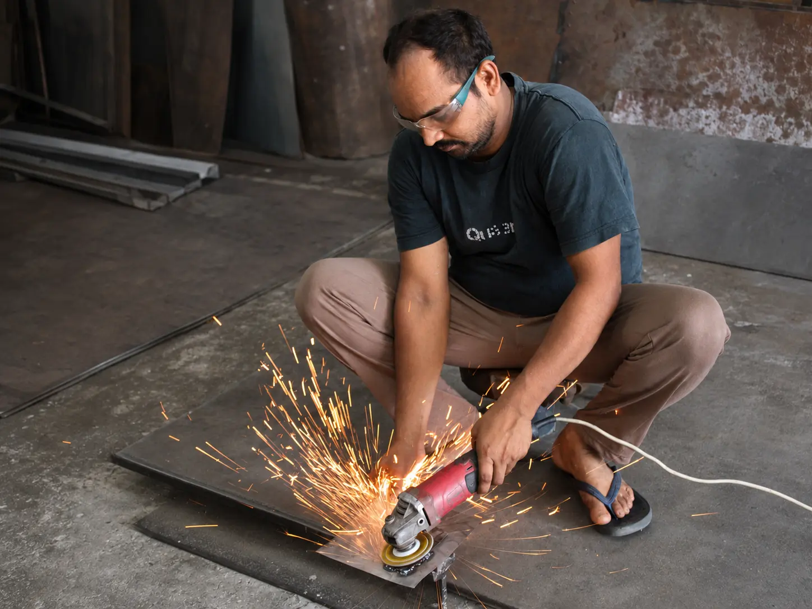
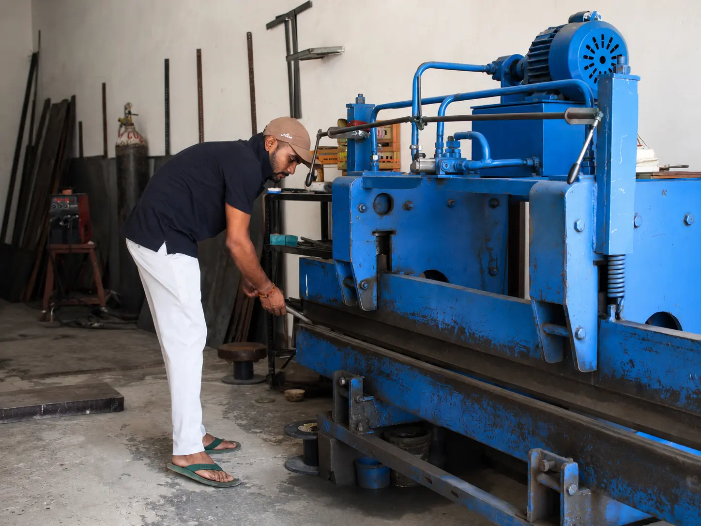
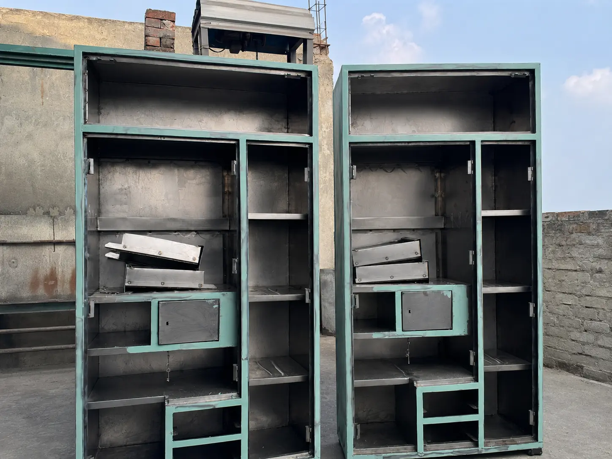
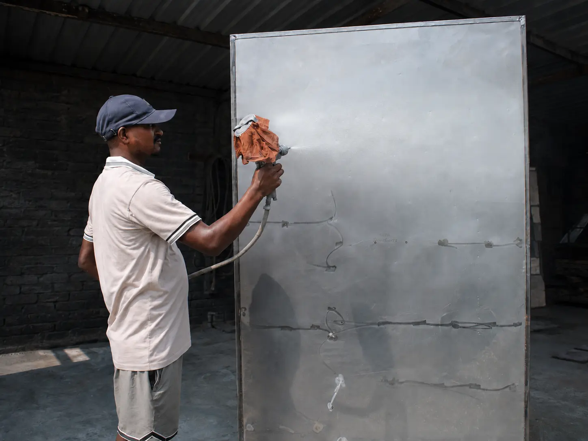
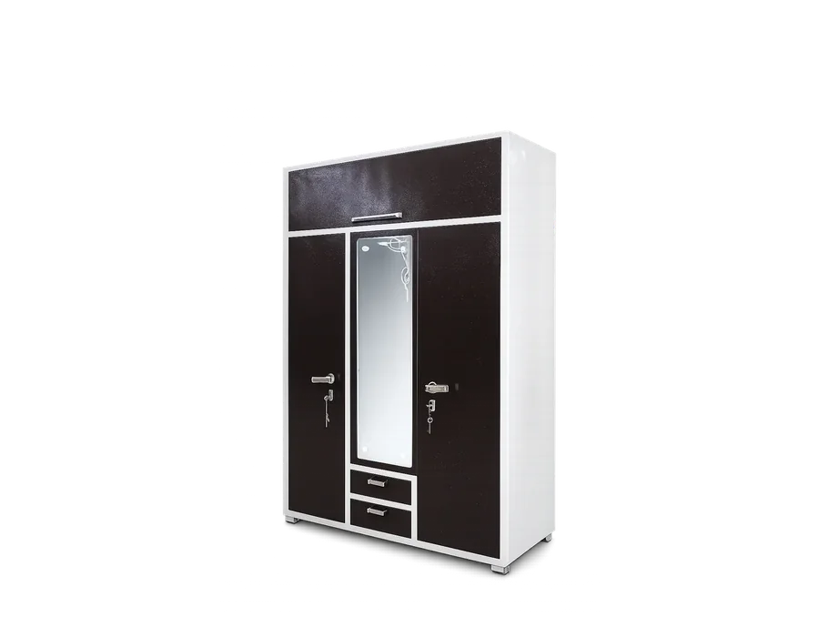

PreparationStep01
Raw Sheet Metal
The process begins with sheet metal selected for the furniture body, panels and internal components.
Follow the complete SANKALP making process—ten considered steps that turn raw steel into furniture for everyday spaces.
See how steel takes shape

Each stage adds structure, precision or finish. Together they create a piece that looks considered and works hard.

PreparationThe process begins with sheet metal selected for the furniture body, panels and internal components.
Sheets and sections are cut to the required dimensions so every component starts with the right proportion.
Cut parts are shaped on the bending machine to create clean edges, corners and structural folds.
 Fabrication
Fabrication
Structural pieces are joined with MIG welding to build a strong and dependable furniture frame.
 Fabrication
Fabrication
Sheet-metal panels are joined at focused points, keeping the assembly secure and neatly aligned.
 Fabrication
Fabrication
Accurate holes are prepared for hinges, locks, handles and the fittings required by each design.

FabricationPanels, frames and compartments are brought together and aligned into the final furniture form.
 Finishing
Finishing
Putty is applied to weld marks and surface irregularities, then levelled to prepare a smooth base.

FinishingThe prepared body receives an even painted finish that gives the furniture its final colour and character.

CompleteFittings and details come together in a finished piece, ready to serve the space it was made for.